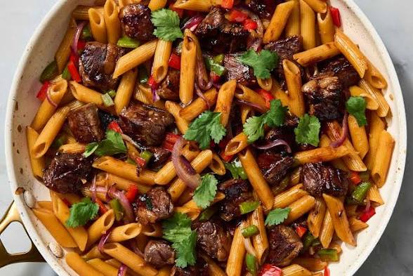

Stir Fry Penne Pasta Recipe
Penne is a pasta like other pasta,it is long and shaped,you can cook penne like stir frying,with stew or jollof.So today we are going to make a stir fry penne pasta
Ingredients
- Penne Pasta
- Vegetable oil
- Seasoning
- Water
- Onion
- Vegetables
- Meat
- Parsley
Instructions
- Boil pasta in water until al dente.
- Fry onion with oil and put some seasonings to taste and add some vegetables.
- Mix until the vegetables are cooked.
- Put the cooked penne pasta and stir it until cooked and taste.
- Sprinkle the parsley on top of the Penne pasta.
- Serve it in a plate or dish.
